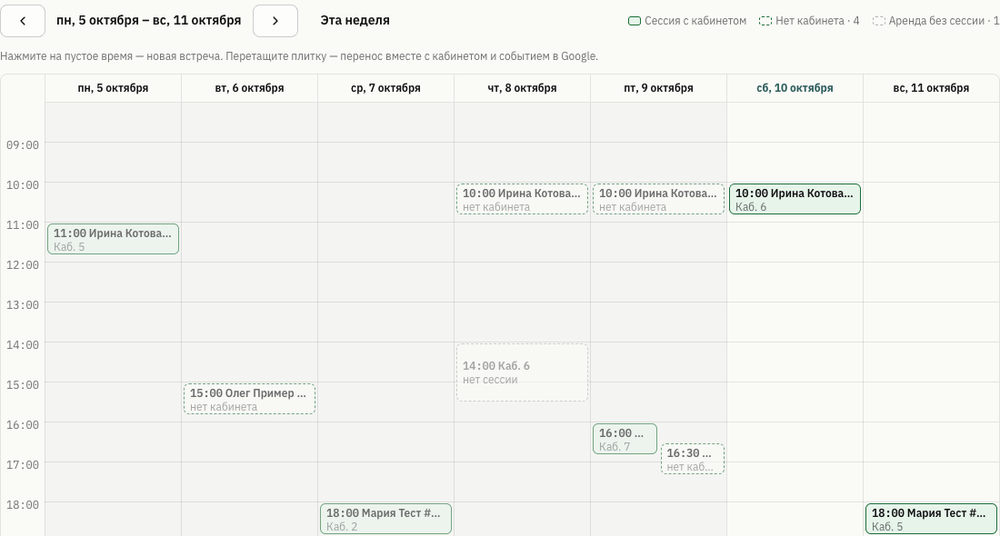
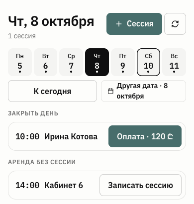

Как подключить Google Календарь и вести клиентов, сессии, кабинеты, деньги и заметки — так, чтобы на учёт уходило несколько минут в день.
Откройте unbox.com.ge/crm — это «Кабинет специалиста». Слева меню из четырёх групп. С телефона CRM открывается в мобильном виде сама.
Внизу справа — круглая кнопка быстрых действий: Новый клиент, Новая сессия, Забронировать кабинет, Открыть Google Календарь.
Заметки шифруются. Текст заметок хранится в базе в зашифрованном виде и никогда не уходит в Google Календарь.
Коды вместо имён. У каждого клиента есть код вида #4821. Можно вести календарь вообще без имён — только кодами.
Одно правило вместо десяти: в календаре — имя (или код) и время. Всё содержательное — внутри CRM: в карточке и в «Заметках».
Новый кабинет встречает вас чек-листом на «Дашборде». Пройдите его по порядку — и CRM готова к работе.
Настройки → Счета для оплаты. По умолчанию есть «Наличные», «TBC», «BOG» — добавьте свои, если нужно. Сюда будут записываться оплаты в один тап.
10 минут, один раз. Пошагово — в разделе 3. После этого клиенты и сессии будут подтягиваться сами.
Либо вручную: Клиенты → + Клиент (имя, ставка за сессию, валюта — код подставится сам). Либо пусть их создаст календарь: каждое новое имя в календаре станет карточкой.
Анкета — так вас видят клиенты в каталоге специалистов Unbox. Часы приёма — недельный шаблон и исключения (отпуск): CRM предупредит, если вы записываете клиента на время отпуска.
Прямо из CRM: Бронирования → Шахматка, выделите свободное время — и сразу привяжите клиента. Подробно — в разделе 7.
Если уже ведёте клиентов в таблице или блокноте: не переносите историю руками. Подключите календарь, нажмите Сессии → Синхронизация, выберите «Период назад: 3 мес.» — прошлые встречи подтянутся сессиями. Останется отметить, какие из них оплачены (раздел 6).
Делается один раз, с компьютера. На телефоне экрана настроек календаря нет.
В Google Календаре слева: Другие календари → ＋ → Создать календарь.
Это обязательно. Из каждого события подключённого календаря CRM делает сессию, а из нового названия — карточку клиента. Подключите личный календарь — и «Стоматолог» или приглашение на рабочую встречу станут «клиентами».
Три точки у календаря «Клиенты» → Настройки и общий доступ → Доступ для отдельных пользователей → добавьте адрес (его же можно скопировать кнопкой в CRM → Настройки):
psycrm-bot@psycrm-calendar.iam.gserviceaccount.com
Права — «Внесение изменений в события». С правом «только просмотр» CRM не сможет добавлять ваши сессии в календарь.
Там же, ниже по странице: Интеграция календаря → Идентификатор календаря. Он выглядит как длинный адрес, заканчивающийся на @group.calendar.google.com.
CRM → Настройки → Google Календарь: вставьте в поле «ID календаря», нажмите Сохранить, затем Проверить подключение. CRM попробует прочитать календарь и записать в него пробное событие.
Зелёное «Подключение … работает» — готово. Красная ошибка — см. «Частые вопросы» в конце гайда.
CRM узнаёт клиента сначала по коду #XXXX, потом — по точному имени из карточки. Выберите свой уровень приватности:
Пишите имя всегда одинаково — а лучше с кодом. «Анна С.» и «Анна Смирнова» без кода — для системы два разных человека, получатся две карточки. Если дубль появился — Клиенты → Слить дубли.
Бот Unbox сверяет календарь «Клиенты» и CRM каждые 20 минут, в обе стороны.
| Вы сделали | Что произойдёт |
|---|---|
| Поставили встречу в Google | Появится сессия. Новое имя — новая карточка клиента. |
| Перенесли встречу в Google | Сессия переедет. Бронь кабинета сама не двигается — придёт уведомление «перенесите бронь». |
| Создали или перенесли сессию в CRM | Событие в Google появится или передвинется (галочка «Добавить в Google Календарь» включена по умолчанию). |
| Удалили встречу в Google защитный режим — по умолчанию | Сессия и бронь остаются, приходит уведомление — решаете вы. |
| Удалили встречу в Google режим «Google Календарь главный» | Включается в Настройках. Пустая сессия удалится; сессия с оплатой или заметкой станет «Отменил специалист». Деньги и брони не трогаются. |
Сессии → Синхронизация. Выберите период назад и вперёд и нажмите Предпросмотр — CRM покажет, кто станет новой карточкой клиента.
Снимите галочку с того, что не клиент (например, «Координация команды») — такие названия больше никогда не станут карточками, в том числе при автосинхронизации. Явно личное («Отпуск», «Супервизия», «Созвон») CRM пропускает сама.
Список клиентов показывает главное: когда следующая встреча, когда была прошлая, долг и ставка. Поиск — по имени, телефону, Telegram или коду.
Клиенты → + Клиент: имя, телефон, Telegram, ставка за сессию и валюта (GEL, USD, EUR, RUB, USDT). Код для календаря подставится сам — можно взять другой.
Под «Ещё» — e-mail, теги и счёт по умолчанию: туда будет записываться оплата в один тап (например, клиент всегда платит переводом на TBC).
Ставка экономит время: у каждой новой сессии цена подставится из карточки. Менять её руками нужно только для исключений.
| Блок | Что даёт |
|---|---|
| Следующая встреча | Дата, время, есть ли кабинет. Кнопки Перенести и Кабинет. Если встречи нет — кнопка «Записать на …» в тот же день недели и время, что в прошлый раз. |
| Долг | Сумма и число неоплаченных сессий. Отметить оплату — закрыть одну или все сразу. |
| История | Прошлые сессии и заметки одной лентой. Карандаш у сессии — цена, валюта, счёт, статус. «Заметка к сессии» — прямо под ней. |
| Деньги | Ставка, сколько оплачено всего, последние оплаты (можно исправить или удалить). |
| Из календаря | Подтянуть сессии этого клиента из Google за любой период — удобно при переносе старой истории. |
Клиент ушёл на перерыв — Поставить на паузу. Он пропадёт из списка «В работе» и из общего долга на дашборде, но вся история сохранится. Вернуть — одной кнопкой.
При изменении ставки CRM спросит, к чему её применить: только к новым сессиям, ко всем запланированным или ко всем неоплаченным. Прошлые оплаты не пересчитываются.
Слить дубли. Клиенты → Слить дубли: выберите основную карточку, какие имя и контакты оставить. Сессии, оплаты и заметки соберутся в одной карточке, старый код тоже продолжит узнаваться в календаре. Объединение отменить нельзя — проверьте, что это один человек.
Новая сессия (на дашборде, в «Сессиях» или круглой кнопкой): найдите клиента по имени или коду, нажмите +1 нед или +2 нед — дата и время подставятся «как в прошлый раз». Цену можно не трогать — возьмётся ставка клиента.
CRM мягко предупредит, если на это время уже что-то стоит, вы в отпуске или время уже прошло. Если в календаре уже есть встреча с этим клиентом в пределах 3 часов, спросит: Перенести существующую или Всё равно создать — так не появляются дубли.
Постоянный клиент? Серию (каждую неделю, раз в 2 или 4 недели) удобнее всего создать вместе с бронью кабинета в шахматке — раздел 7. Сессия и событие в Google создадутся на все даты сразу.
Прошедшие сессии сами становятся «Прошла», когда вы открываете дашборд или «Сессии» — отмечать руками не нужно. Отменённые не считаются долгом. На экране «Сессии» — вид Список или Неделя и фильтр по статусам.
| Где | Как |
|---|---|
| У любой сессии | Отметить оплату · 120 ₾ — оплата записывается на счёт сессии или клиента. Ошиблись — 5 секунд на «Вернуть». |
| Заплатили часть | Кнопка сама станет Доплатить · 40 ₾. |
| Клиент закрыл весь долг | В карточке: Отметить оплату → Отметить все. Будущие сессии не трогаются — только прошедшие. |
| Снять ошибочную оплату | Значок «Оплачено» → ✕ → подтвердить. |
Дата оплаты — день, когда вы её отметили, а не день сессии. Так «Касса» месяца совпадает с реальными деньгами.
«Отменить» ≠ «Удалить». Отменённая сессия остаётся в истории со статусом и не считается долгом. Удалять — только ошибочные записи: на телефоне это «Записали по ошибке — удалить совсем».
Бронирования → Шахматка — те же кабинеты Unbox One, Uni и Neo, что на сайте, но со своими клиентами и сессиями рядом.
| 10:00 | 11:00 | 12:00 | 13:00 | 14:00 | 15:00 | 16:00 | |
|---|---|---|---|---|---|---|---|
| Сессии без кабинета | 11:00 Ирина · нет кабинета | 15:00 #2710 · есть аренда | |||||
| Кабинет 1 | занято | Анна #4821 | #2710 · нет сессии | ||||
| Кабинет 2 | занято | занято | Олег #1190 |
Проведите мышью по свободному времени → Забронировать кабинет. Выберите длительность, клиента и стоимость сессии — кнопка станет Забронировать + сессия: бронь, сессия в CRM и событие в Google появятся одновременно.
В том же окне Повторение: каждую неделю, раз в 2 или раз в 4 недели, и сколько раз. Получится Создать серию · N броней — все даты с сессиями сразу. Серии видны во вкладке Серии, там же — Продлить серию.
Верхняя пунктирная строка — встречи из календаря, под которые кабинет не снят. Нажмите на плитку: Снять кабинет на это время или, если аренда уже есть, Привязать к вашей аренде. Онлайн-сессии кабинета не требуют — строку можно скрыть переключателем.
Ваша бронь без привязанной сессии выглядит полупрозрачной. Нажмите на неё → Распределить клиентов: по клиенту на каждый час, можно с повторением.
Занято нужное время? Нажмите на чужую бронь — Слежу за слотами: если она освободится, придёт уведомление. Брони «На пересдаче» можно забрать себе.
Сессии → Неделя: ваши встречи и аренды кабинетов на одной сетке. Сразу видно, где кабинет не снят, а где аренда стоит без клиента.

Пример на демо-данных, имена выдуманные.
Сплошная зелёная — сессия с кабинетом. Зелёный пунктир — сессия без кабинета (онлайн — всё в порядке). Серый пунктир — аренда без сессии.
Выберите клиента и длительность, при желании отметьте «Снять кабинет» — сайт покажет только свободные в это время кабинеты. Сессия, событие в Google и аренда появятся одним действием. Аренда оплачивается как обычно: бонусные часы → абонемент → баланс.
Сайт переспросит и перенесёт встречу вместе с арендой и событием в Google. Если новое время дороже (пиковые часы), разница спишется с баланса по обычным правилам переноса. Из серии переносится только эта встреча; всю серию — в «Бронированиях».
Карточка клиента, «Снять кабинет», «Отметить оплату», «Записать сессию на эту аренду».
Само привязывается. Если время сессии и вашей аренды совпадает минута в минуту, CRM свяжет их сама при открытии — «нет кабинета» исчезнет.

На телефоне в «Сегодня» есть полка «Аренда без сессии» с кнопкой «Записать сессию».
CRM различает «сколько я заработал» и «сколько денег пришло» — это разные числа, и оба полезны.
Оплаченные сессии, которые прошли в этом месяце (по дате сессии). Ответ на вопрос «сколько я заработал работой в октябре». Экран «Сессии».
Все деньги, полученные в этом месяце, — включая оплату старых долгов. Ответ на «сколько денег пришло». Дашборд, «Сессии», «Финансы».
Прошедшие неоплаченные сессии за всё время, независимо от выбранного периода. Клиенты на паузе в общий долг дашборда не входят.
Сколько прошедших сессий ждут оплаты. Будущие сессии долгом не считаются.
Пример. В октябре вы провели 39 оплаченных сессий на 4 680 ₾, а клиент ещё вернул 360 ₾ долга за сентябрь. «Заработано» — 4 680 ₾, «Касса» — 5 040 ₾.
Период «День / Неделя / Месяц», список платежей и блок «Долги»: у каждого должника — Написать и Отметить оплату. Новый платёж — записать оплату вручную.
Аренда кабинетов — отдельно. Ваши брони кабинетов оплачиваются центру через баланс на сайте, абонемент или бонусы (Деньги → Абонемент / Бонусы). В «Кассу» CRM они не попадают: CRM считает только деньги ваших клиентов.
Заметки → + Заметка: клиент, текст, теги. Или «Заметка к сессии» прямо в карточке клиента под нужной встречей.
Где что писать: контекст и динамику — в заметки; в календаре — только имя или код.
С телефона CRM открывается в мобильном виде сама. Внизу пять вкладок: Сегодня, Клиенты, Сессии, Финансы, Заметки.
Подключать календарь нужно с компьютера — на телефоне этого экрана нет.
Остались вопросы? Пишите в Telegram @UnboxCenter или звоните +995 599 324 668 — поможем подключиться.